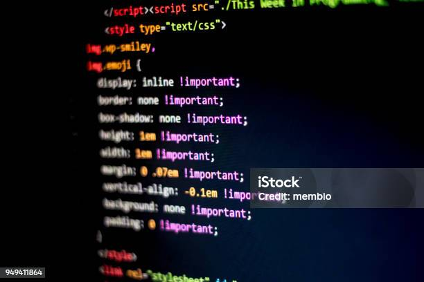
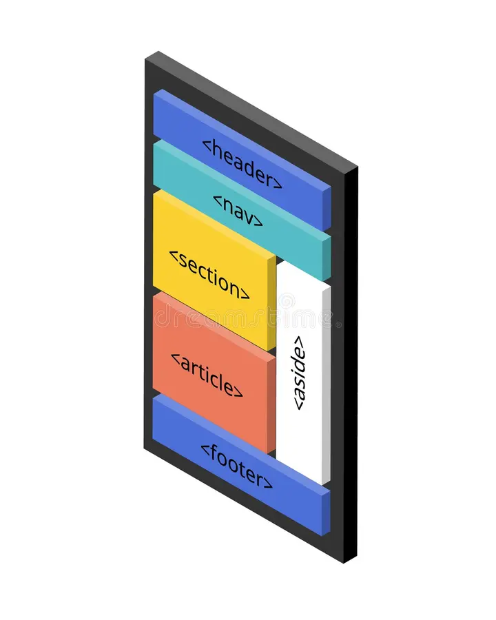

O Modelo de Caixas

Conceito
A grande maioria dos elementos HTML presentes na web, são como caixas, surgindo assim o termo box model, elas são containers que armazenam conteúdos ou até outras caixas.
Anatomia
A caixa é formada pelo conteúdo, por padrão é tudo que uma caixa tem, todo conteúdo possui uma largura (width) e uma altura (height), elas definem o tamanho da caixa (box-size).Depois tem a borda (border) que fica em volta do conteúdo, pode ter espessura, cor e formato. Entre a borda e o contéudo temos o preenchimento (padding), e depois da borda temos a margem(margin), e entre a margem e a borda termos o contorno(outline).
Margens Automáticas
Usado para centralizar blocos, usamos a tag <margin> e depois auto.
Tipos de Caixas
Há duas categorias: Caixa do tipo block-level e Caixa do tipo inline-level. A caixa do tipo block-level sempre vai se iniciar em uma nova linha e ocupar a largura total, já as inline-level, não vai começar em uma linha, e sim no ponto exato na qual ele foi definido, e sua largura irá ocupar somente o tamanho relativo do seu conteúdo.
Gruping Tags e Semantic Tags
As tags de agrupamento, são uma forma semâtica de definir e separar nosso contéudo, como main, que é todo conteúdo principal, o header, que são os cabeçalhos, o footer, responsável pelo rodapé, o nav, define uma área de links, o section, cria uma sessões para a página, o article, um artigo que traz um conteúdo independente, e o aside, conteúdo periférico, complementar.
Sombras nas Caixas
Uma opção para o design do site, com a tag <box-shadow>, ela aplica um sobreamento no local, borda da caixa, já o <text-shadow> aplica um sobreamento nas letras.
Bordas Decoradas
Com a tag <border-radius>, é possível arredondar as bordas, deixando com uma decoração a mais.
.png)